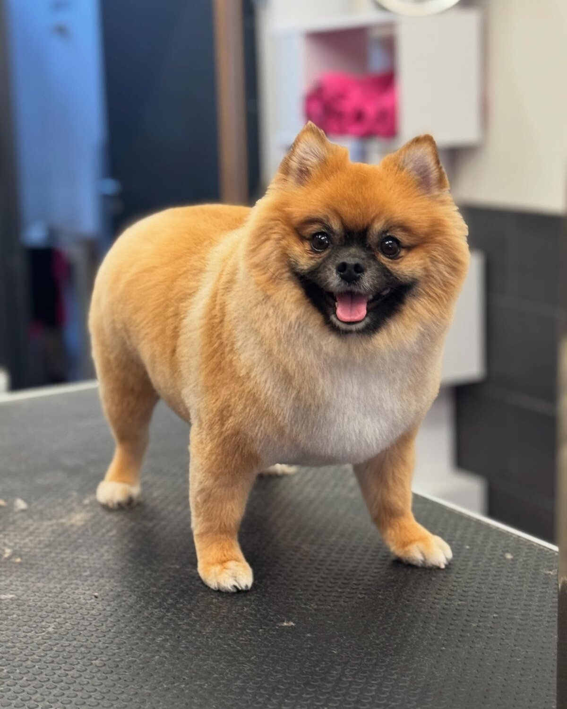
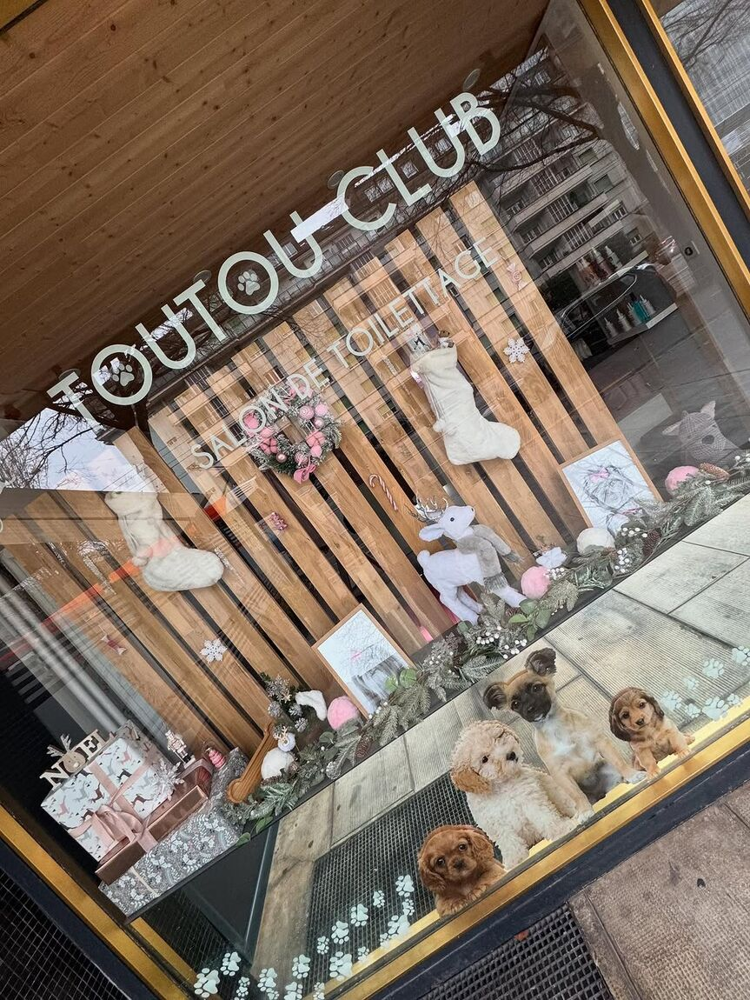
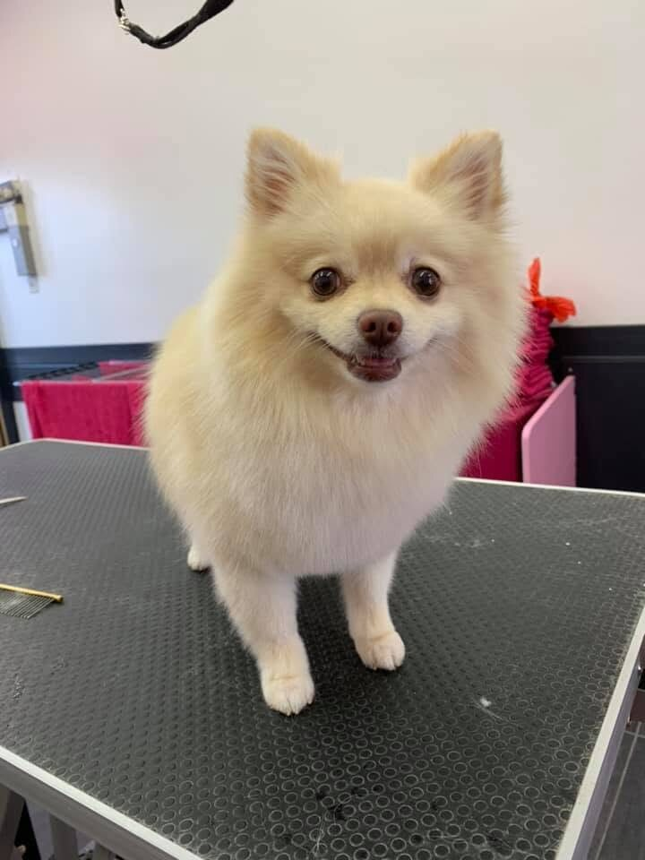
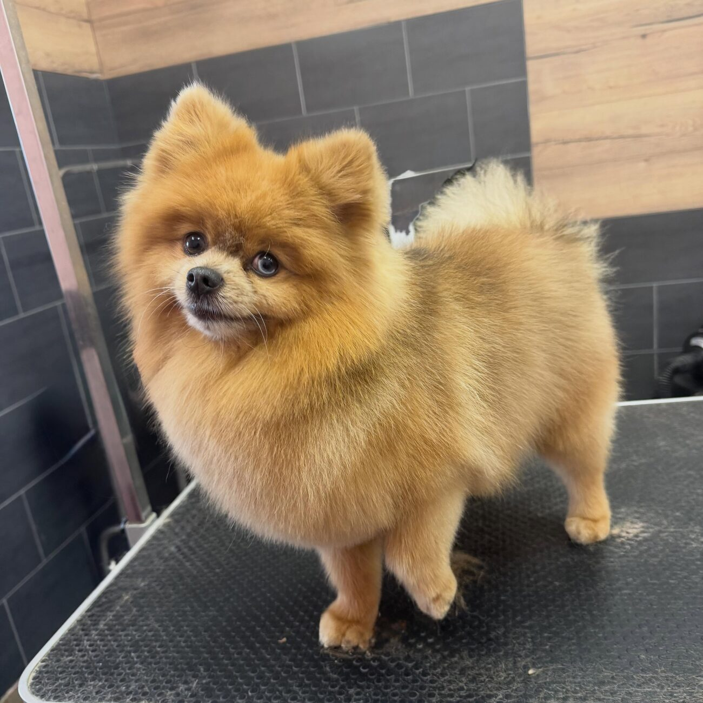
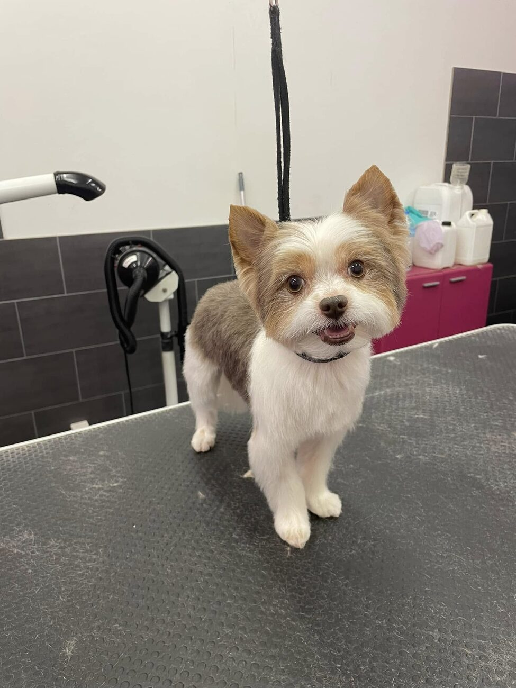

Toilettage chien
Bain, démêlage, coupe et finitions adaptés à la race, au pelage et au tempérament de votre chien.
Salon de toilettage · Genève — Servette
Toutou-Club est un salon indépendant niché au cœur de la Servette. Alexandra y accueille vos compagnons, un par un, sur rendez-vous — avec patience, calme et beaucoup de tendresse.

Nos prestations
Chaque pelage est différent. Chaque caractère aussi. Les soins s'adaptent à votre compagnon — jamais l'inverse.
Bain, démêlage, coupe et finitions adaptés à la race, au pelage et au tempérament de votre chien.
Un toilettage tout en délicatesse pour les chats : bain, démêlage et soin du poil, dans le calme et sans précipitation.
La touche finale : une petite note parfumée et des finitions soignées pour repartir beau, propre et tout doux.
Un seul animal à la fois, sur rendez-vous. Les tarifs dépendent de l'animal, du pelage et des soins choisis — appelez-nous ou écrivez sur WhatsApp pour un devis personnalisé.

Le salon
Toutou-Club, c'est un salon de toilettage indépendant, tenu par Alexandra. Ici, pas de chaîne ni de précipitation : votre compagnon est accueilli seul, à son rythme, dans une ambiance calme et rassurante.
Niché sur la Route de Meyrin, dans le quartier de la Servette, le salon reçoit chiens et chats du lundi au vendredi, uniquement sur rendez-vous — pour prendre le temps qu'il faut, à chaque visite.
Avec soin,Alexandra · Toiletteuse
Portraits
Quelques compagnons fraîchement toilettés, passés entre nos mains.



Nous trouver
Adresse
Route de Meyrin 6
1202 Genève — Servette
Voir l'itinéraire →
Horaires
* Ouvertures ponctuelles le samedi annoncées sur Facebook.
Téléphone
Accès
Quartier de la Servette, au centre de Genève — facilement accessible en transports publics.
Questions
Oui. Toutou-Club reçoit uniquement sur rendez-vous, du lundi au vendredi. Cela permet de s'occuper de chaque animal seul, sans stress ni attente.
Par téléphone au 022 734 31 78, ou par mobile et WhatsApp au 079 266 82 91. Vous pouvez aussi passer par le formulaire de contact.
Oui, chiens et chats sont les bienvenus. Le toilettage félin se fait tout en douceur, dans le calme.
Avec plaisir. Le salon accueille volontiers de nouveaux compagnons — contactez-nous pour convenir d'un premier rendez-vous.
Les tarifs ne sont pas affichés en ligne : ils dépendent de l'animal, de son pelage et des soins choisis. Appelez-nous ou écrivez sur WhatsApp pour un devis personnalisé.
Le salon est ouvert du lundi au vendredi. Des ouvertures ponctuelles le samedi sont parfois annoncées sur notre page Facebook.